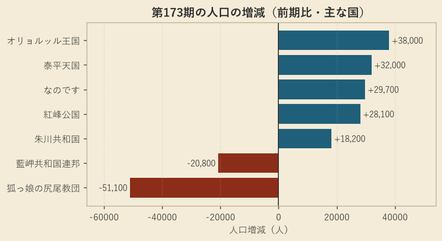
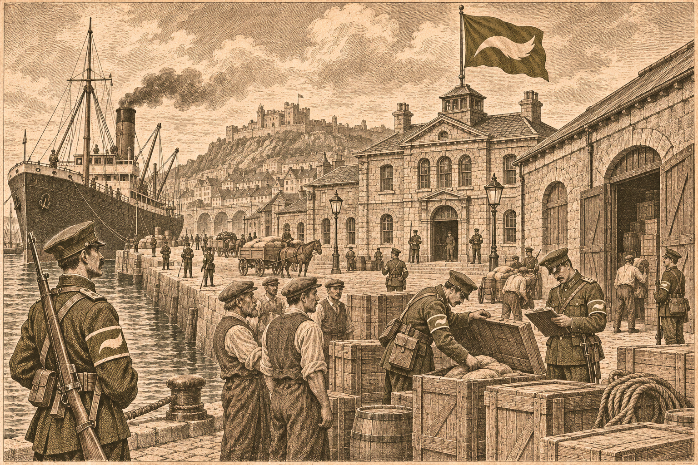

教団、灰岩の港と兵站基地を奪う
泰平とも戦い、人口は五万一千減る
第164期から続く灰岩攻めが実を結ぶ一方、兵の国の足元では民が流れ出ている

【総合部】狐っ娘の尻尾教団が、第173期、灰岩王国の港と兵站基地を相次いで占領した。兵站基地では、蓄えられていた予備兵千人が投降した。第164期の開戦から九期、灰岩を削り続けてきた教団の攻めが、ようやく港という実を結んだ形である。教団は同じ期、東では泰平天国の装甲部隊とも激しく撃ち合い、八千二百人の損害を受けた。勝ちながら削られる、苦しい一期だった。
数字は教団の二つの顔を映している。人口は三十八万千百人から三十三万人へ、五万千百人減った。いっぽう兵力は四十八万七千九百人から五十二万五千五百人へ、三万七千六百人増えた。教団は今期、十か所で徴兵を行い、そこへ仕事を求める三万千三百人が紅峰公国へ移り住んだ。領土は百五十四区画から百五十七区画へ三区画広がったが、国を支える人の数は、勝ち進むほどに細っている。

首都の足元の補給拠点を断つ
教団が奪った灰岩の兵站基地は、教団の首都のすぐ北にあった。首都の足元に敵の補給拠点が残っていては、東の泰平戦へ兵を振り向けるたびに、背後を気にしなければならない。基地を奪って予備兵の投降を受け止め、港も押さえたことで、教団は後方の憂いをひとつ減らした。余裕を得たというより、泰平という新たな敵を前に、背後を片づけておく必要に迫られた手当てとみられる。灰岩戦の詳報は3面、泰平戦は2面で伝える。
灰岩、領土十五区画に
灰岩王国は領土を十七区画から十五区画へ減らし、人口は三万千人、兵力は二万八千七百人にとどまる。対教団戦で灰岩が受けた損害は累計九万九千百人に達した。王国軍の盟主の力は、もはや人口三万の小国のそれである。